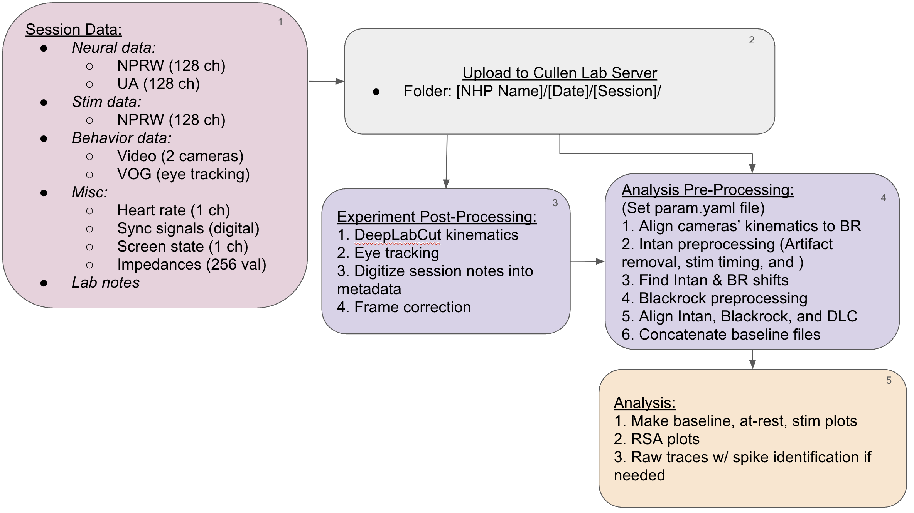

RCP reaching analysis
Analysis pipeline for preprocessing, quantifying, and comparing stimulation trials from the Raynor experiments.

Contents
Repository layout
.
├─ analysis_scripts # Scripts for analysis, use as needed
├─ config # Probe geometry and mapping files
│ ├─ params.yaml # Params for probes, preprocessing, and analysis
│ └─ machines.yaml # User-specific data mounts
├─ docs # Documentation and figures
├─ preprocessing_scripts # One script per preprocessing step
├─ RCP_analysis
│ └─ python
│ ├─ functions # Functions in the RCP_analysis package
│ └─ plotting # Plotting code
├─ scripts # Scripts for individual prototyping
│ └─ your_scripts
├─ LICENSE
└─ README.md
Generated output lands outside the repository, under data_root:
.
└─ data # Experimental data folder
└─ results # Output files
├─ aux_data # Auxiliary data (sync pulses etc.)
├─ checkpoints # Intermediate files
└─ figures # Figures generated by the pipeline
Contact
For questions, contact Bryan Tseng (btseng2@jh.edu) or Nikita Lebedz (nlebedz1@jh.edu).